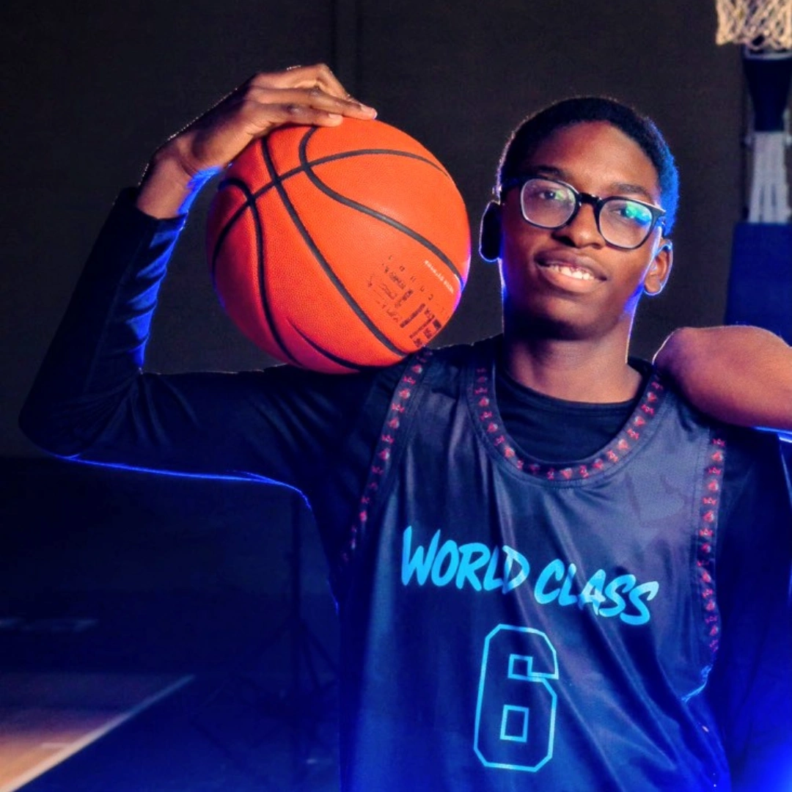

Guard | Winnipeg, Manitoba
Guard
5'10"
2029
Aggressive downhill scorer.
Competitive on-ball defender.
Leads by example and effort.
Dipo Olaleye is a competitive guard who impacts the game on both ends of the floor. His strongest qualities are his aggressive downhill scoring, defensive intensity, and leadership. He consistently competes at a high level and takes pride in helping his team win through effort and toughness. Offensively, Dipo is most effective attacking the basket and finishing through contact. Defensively, he embraces challenging matchups and works to disrupt opposing ball handlers. His competitive mindset and willingness to improve make him a valuable teammate and leader. Areas of continued development include three-point shooting consistency, advanced ball handling, decision making, and overall basketball IQ. As these skills continue to improve, he aims to elevate his game to the collegiate level and beyond.